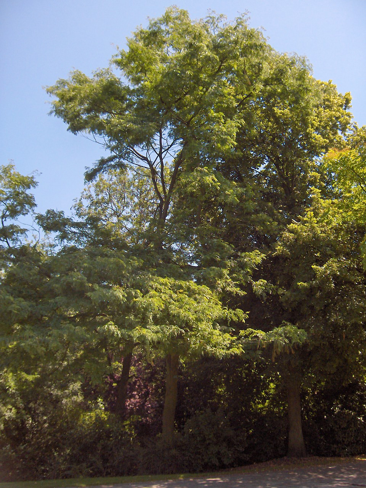

Gleditsia — Honey locust (Valse christusdoorn)
A fast-growing street brawler armed with branching thorns up to 8 cm long, rot-resistant shock-proof wood, and the audacity to thrive on compacted urban rubble — it fights dirty and it fights first.
Combat flavor
Gleditsia is the classic skirmisher: fast growth means early deployment, dense wood delivers hard hits, and its branching thorns can deal damage to anything that tries to push past it. Signature ability: a thorn-wall counter-attack that damages melee units on contact.
Real-world facts
Typical / max height20–30 m typical; up to ~45 m
Lifespanup to 125 years (moderate for a large tree)
Wood755 kg/m³ air-dry; Janka 1,580 lbf (7,030 N) — dense, shock-resistant, rot-resistant; used for fence posts and railroad ties
Growth speedfast
Ecology / notable traitsTrunk and branches armed with stout branched thorns (modified stems, up to 8 cm, occasionally leaf-bearing); native to moist North American river valleys; now introduced worldwide and invasive in parts of Europe, Australia, and South America; exceptional tolerance of urban stressors — compaction, drought, flooding, salt, heat; pods contain sweet edible pulp (food for megafauna historically); thornless cultivars dominate urban planting but wild form is formidably spiny
Gallery
